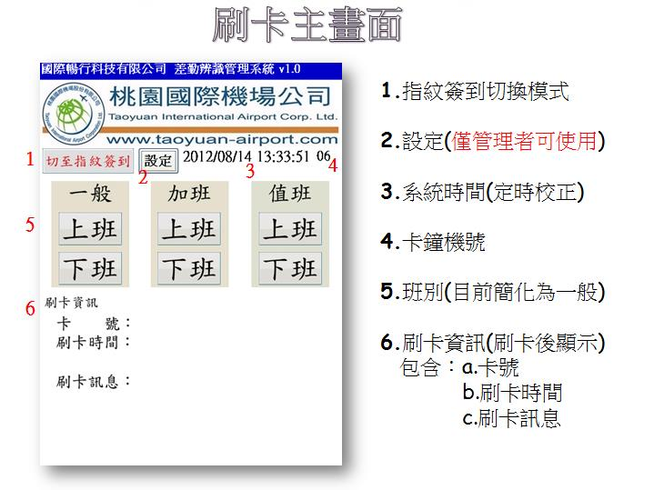
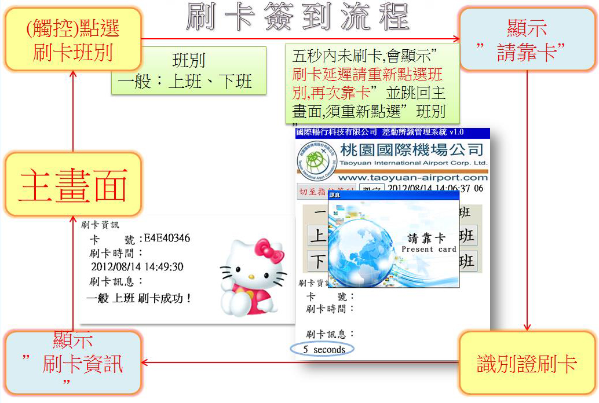
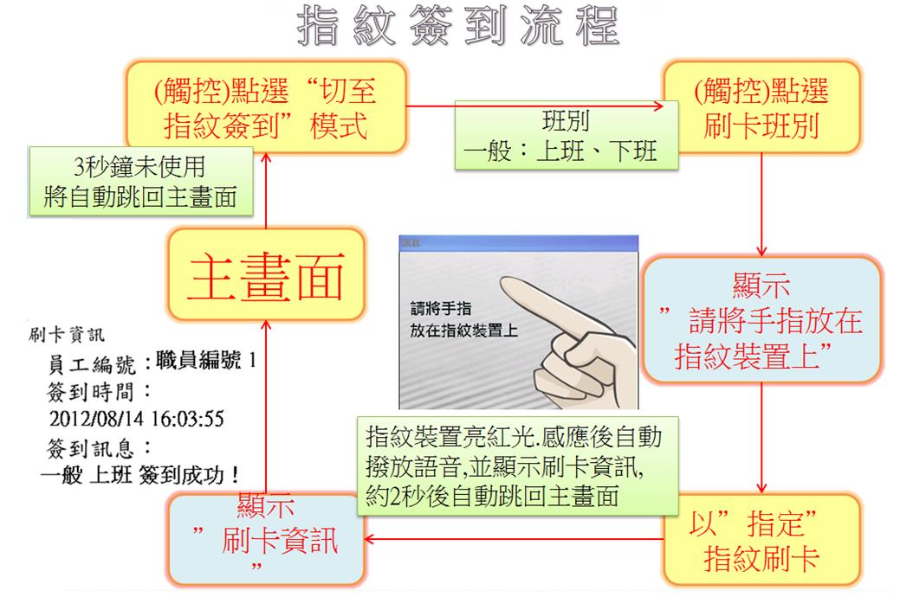
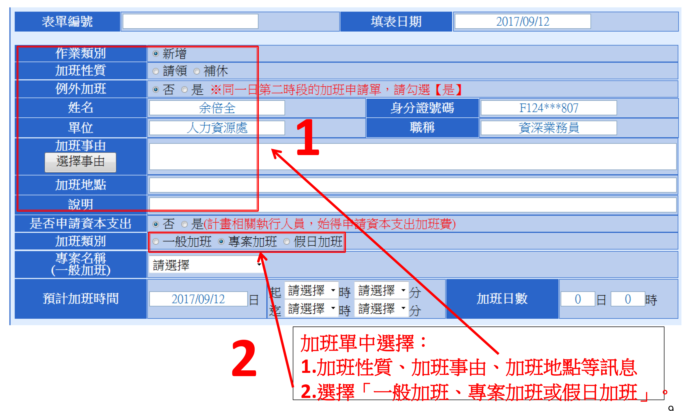
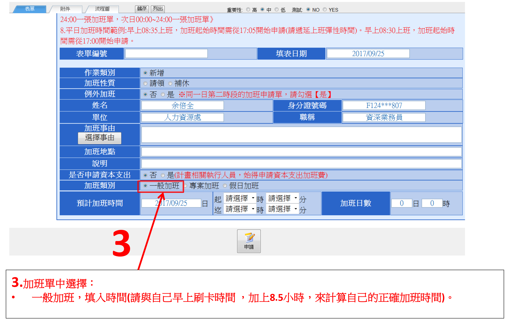
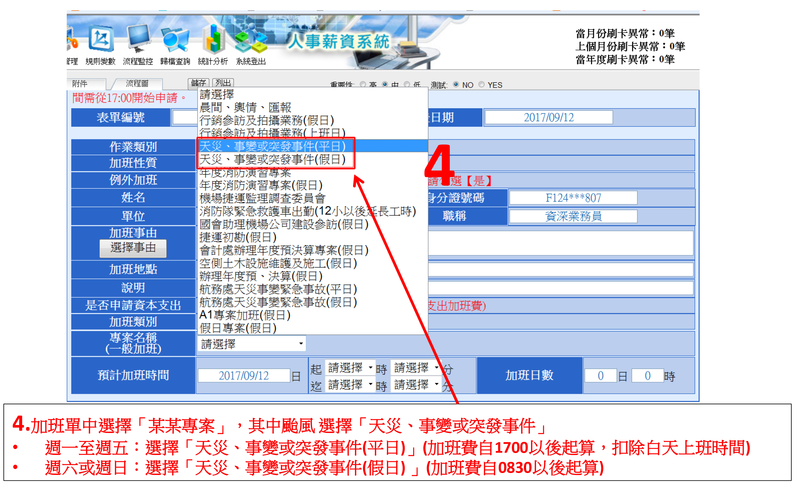
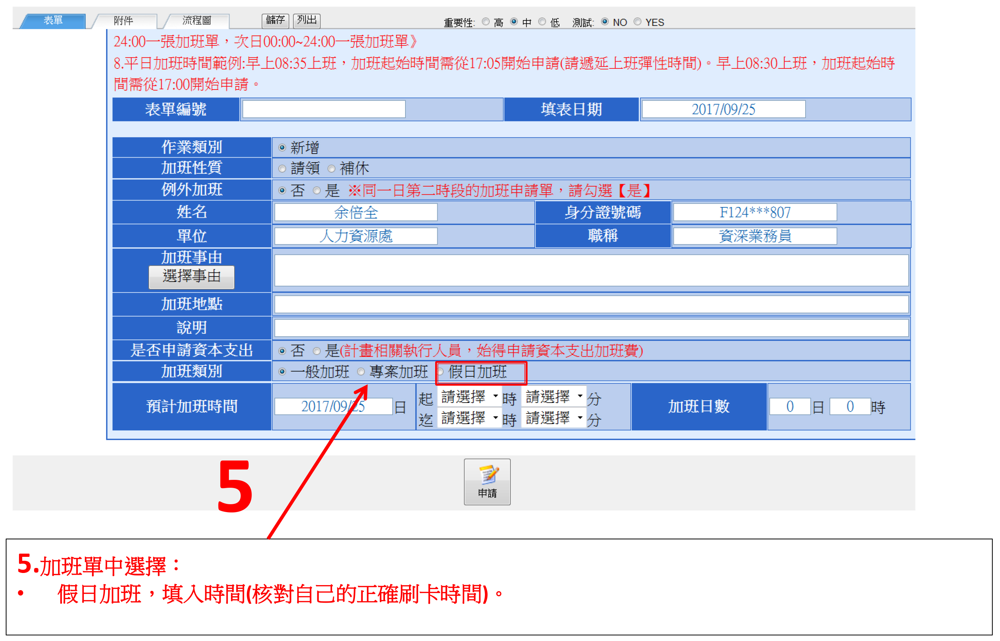
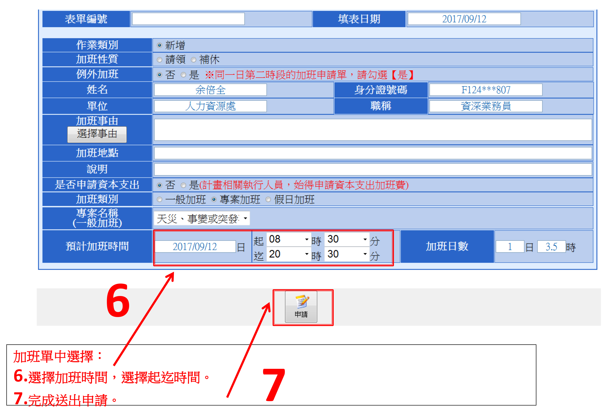

A：本公司差勤管理要點第4點：
本公司人員出勤時間依下例規定辦理：
（一）行政人員實施30分鐘彈性上班制度並 依下列時間出勤：
1.每日上班全日為8小時，半日為4小時。
2.彈性時間：8時30分至9時，17時至17時30分。
3.核心時間：9時至12時30分，13時至17時。
4.超過9時以後始到勤者，當天不實施彈性上班，辦理請假補足未到勤時數。
5.中午休息時間： 12時30分至13時。
6.全日未達8小時工作時數者，需按規定請假補足。
7.下午請半天假者，上午上下班實施彈性時間；上午請半天假者，下午上下班不實施彈性時間。
A：需要~本公司差勤管理要點第5點第1款：
本公司人員出勤刷卡手續依下列規定辦理：
（一）出勤人員應於上、下班時間各刷卡乙次。上班期間如有短暫請假或公出時，除應辦理請假手續外，並於進出時刷卡。
A：如在指紋模式會導致無法刷卡!!
A：流程如下
A：流程如下
A：本公司差勤管理要點第5點第2、3款：
本公司人員出勤刷卡手續依下列規定辦理：
（二）上、下班刷卡時間，應於上班前、下班後2小時內刷卡。
（三）值日（夜）人員如於值日後，續上班或於下班後續值夜者，以其班表排定起迄時間之到班前與離班後2小時內刷卡。
超過2小時內刷卡視為差勤異常。
A：本公司差勤管理要點第5點第4款第2項：
本公司人員出勤刷卡手續依下列規定辦理：
遺忘刷卡、操作不正確等各項因素申請異常補登者，每月以申請2次為限，並由各級單位主管確實審核申請人員出勤時間。超過規定異常補登次數者，應辦理請假手續，並由各單位主管列入個人平時考核參考。
（六）刷卡應親自為之，不得代替他人或委託他人代為刷卡，違者應予議處。
A：因為申請加班費為請領公款行為，需當事人確認方能申請，同仁申請加班費應謹慎為之。盜領加班費案例分享如下：
偵審情形：第一審判決有罪。弊端類型：利用職務上機會偽造及變造公文書，並不實登載於公文書，藉此詐取加班費。
判決內容：嗣經地方法院判決甲違反貪污治罪條例第5條第1項第2款利用職務上機會詐欺財物罪、刑法第216條、第211條行使變造公文書罪，以及第216條、第213條行使公務員登載不實文書罪，定應執行有期徒刑12年，褫奪公權5年。另未扣案之所得財物應予追繳沒收，如全部或一部無法追繳時，以其財產抵償之。
A：加班申請流程如下
 專案加班申請流程
假日加班申請流程
加班申請流程
